Front End Development
MVC
- Model View Controller or MVC as it is popularly called, is a software
design pattern for developing web applications. A Model View
Controller pattern is made up of the following three parts −
- Model − The lowest level of the pattern which is responsible for
maintaining data.
- View − This is responsible for displaying all or a portion of the data to
the user.
- Controller − Software Code that controls the interactions between
the Model and View.
MVC Architecture
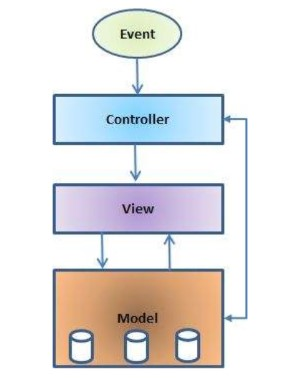
MVC Explain
The Model
- The model is responsible for managing the data of the application. It
responds to the request from the view and it also responds to
instructions from the controller to update itself.
The View
- It means presentation of data in a particular format, triggered by a
controller's decision to present the data. They are script-based
templating systems like JSP, ASP, PHP and very easy to integrate with
AJAX technology.
The Controller
- The controller is responsible for responding to the user input and
perform interactions on the data model objects.
- The controller receives the input, it validates the input and then
performs the business operation that modifies the state of the data
model.
React JS
- React is a free and open-source front-end JavaScript library for
building user interfaces based on UI components.
- React components implement a render() method that takes input
data and returns what to display.
- The React.js framework is an open-source JavaScript framework and
library developed by Facebook.>
- ReactJS is a declarative, efficient, and flexible JavaScript library for
building reusable UI components.
React Components
- A Component is one of the core building blocks of React.
- React components are independent and reusable code. They are the
building blocks of any React application.
- DOM
- Interact with a HTML document.
The Document Object Model (DOM) is an application programming
interface (API) for HTML and XML documents. It defines the logical
structure of documents and the way a document is accessed and
manipulated.
Virtual Dom
- A virtual DOM is a lightweight JavaScript representation of the
Document Object Model (DOM) used in declarative web
frameworks such as React, Vue. js, and Elm.
- Updating the virtual DOM is comparatively faster than updating the
actual DOM (via JavaScript).
Create React App
- npx create-react-app my-react-app
- cd my-react-app
- npm start
npm
- The name npm(Node Package Manager) stems from when npm first
was created as a package manager for Node.js.
- All npm packages are defined in files called package.json.
- The content of package.json must be written in JSON.
- At least two fields must be present in the definition
file: name and version.
- npm is the world's largest Software Registry.
- The registry contains over 800,000 code packages.
npx
- The npx stands for Node Package Execute and it comes with the
npm, when you installed npm above 5.2.0 version then automatically
npx will installed.
- It is an npm package runner that can execute any package that you
want from the npm registry without even installing that package.
- The command npm is used to download JavaScript packages
from Node Package Manager, and npx is used to execute JavaScript packages downloaded this way.
How to create Reactjs App
Step 1:
Go to Command Prompt – open.
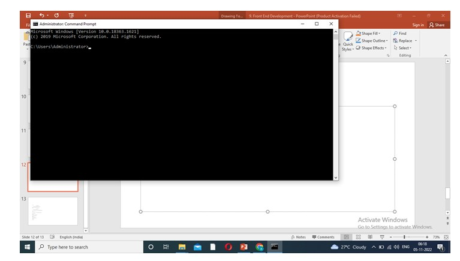
Step 2:
Check node version.
- Type- node –v or node –version Press enter key.
Node js is not installed. Install to continue work.
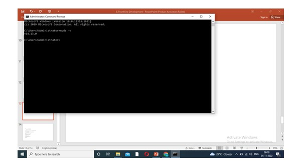
Step 3:
Drive path connect.
- Then type cd.. Press enter key.
- Drive path copy and paste. Eg. Cd C:\user\Admins\Desktop
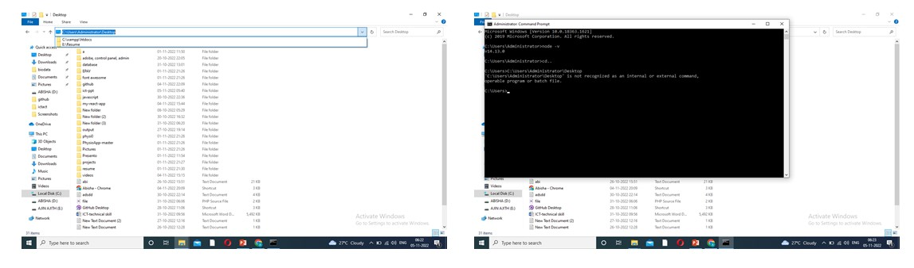
Step 4:
Node Package Execute. Then type
npx create-react-app my-react-app
Enter key press and Download Packages.
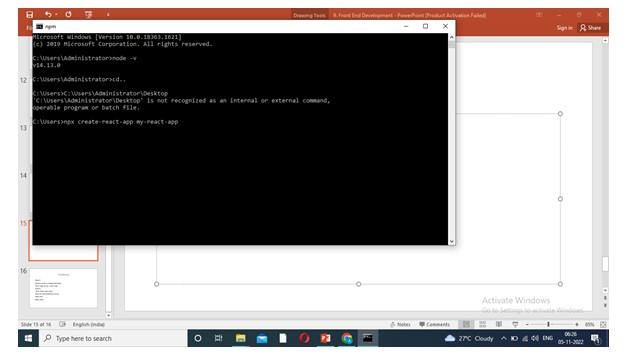
Step 5:
Display check as Happy Hacking!
Then type cd my-react-app
Enter.
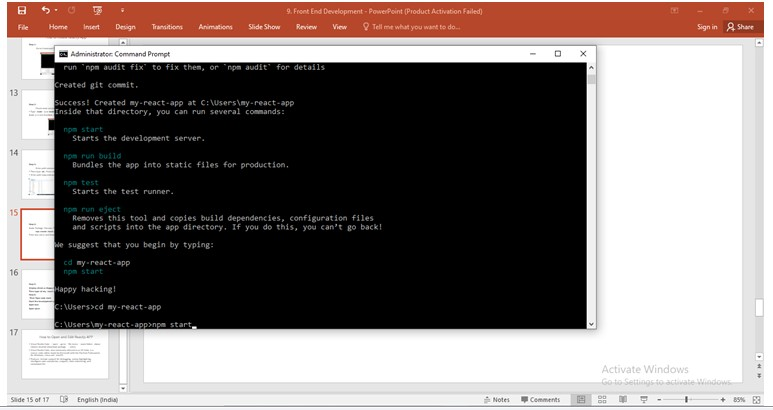
Step 6:
Then Type npm start.
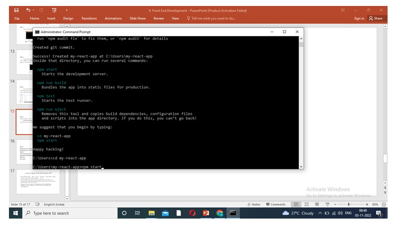
- Command Complete web pack complied successfully
- Automatically connect the server – run as the App.
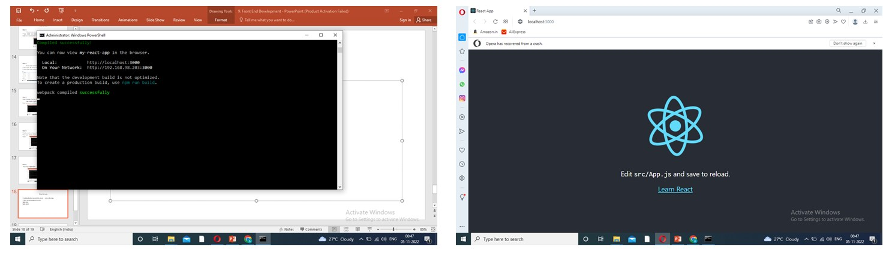
How to Open and Edit Reactjs APP
- Visual Studio Code – open – go to – file menu – open folder- above choose location download package – select.
- Select src- click-App.js – edit - Execute display given below:
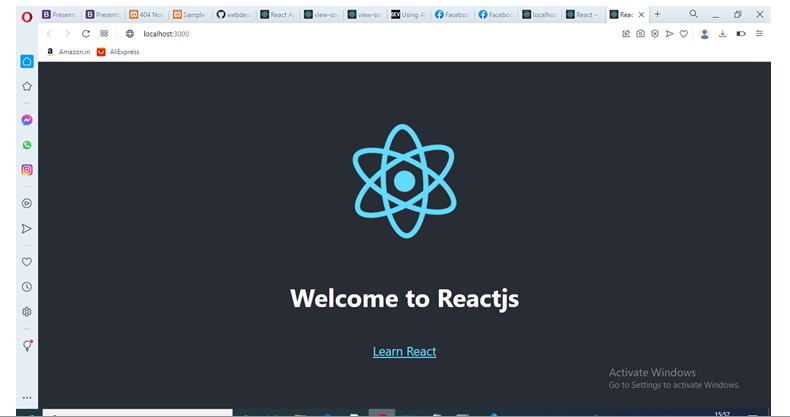
Editing Code
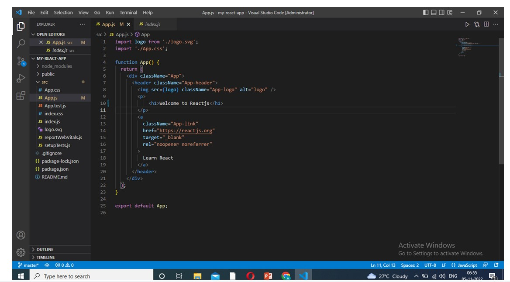
Visual Studio Code
- Visual Studio Code, also commonly referred to as VS Code,
is a source-code editor made by Microsoft with the Electron Framework, for Windows, Linux and macOS.
- Features include support for debugging, syntax highlighting,
intelligent code completion, snippets, code refactoring, and embedded Git.
New App Creation
- Vs code – Src – right click- new file(app name).js- write the program
- export default first-app;
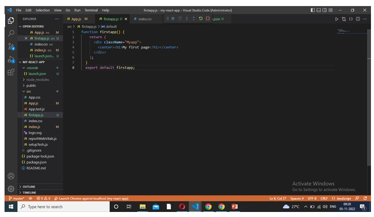
Import
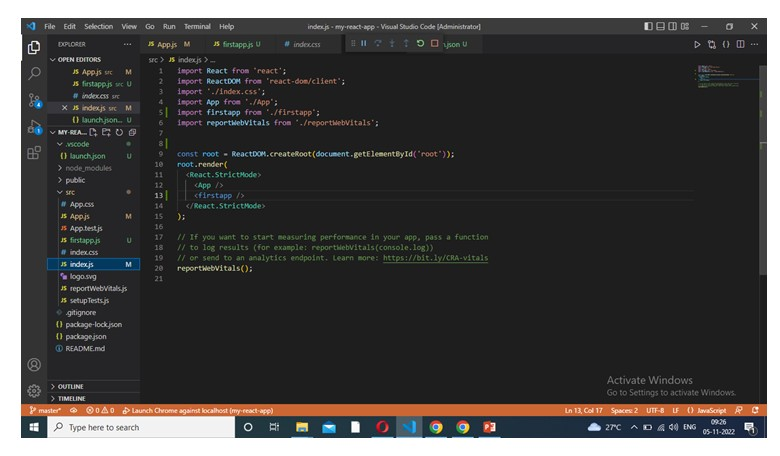
What is JSX?
- JSX stands for JavaScript XML and it is a very useful tool for React developers.
- JSX allows us to write HTML in React.
- JSX makes it easier to write and add HTML in React.
- JSX is a JavaScript Extension Syntax used in React to easily write HTML and JavaScript together.
ES6
- ES6 stands for ECMAScript 6.
- ECMAScript was created to standardize JavaScript, and ES6 is the 6th version of ECMAScript,
- it was published in 2015, and is also known as ECMAScript 2015.
what is components in react js
- Components are independent and reusable bits of code.
- They serve the same purpose as JavaScript functions, but work in isolation and return HTML.
- Components come in two types, Class components and Function components,
in this tutorial we will concentrate on Function components.
Class Components
Create a Class component called Car
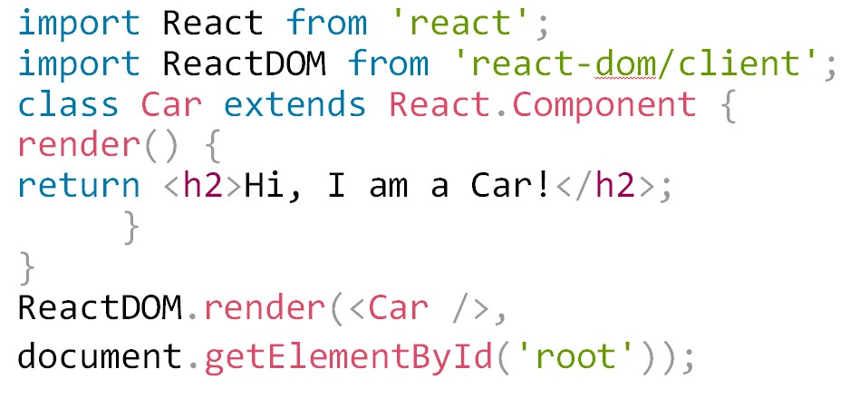
Class Features
- Polymorphism is a feature of object-oriented programming languages that allows
a specific routine to use variables of different types at different times.
- Inheritance is a way to achieve code reusability when some objects have the same
number of properties that can be shared across the app. Inheritance allows the app to
do the coupling between the parent-child component and reuse properties such as state values
and function in its child components.
- Function overloading is a mechanism or ability to create multiple
methods with the same name but different parameter types and return type.
Features of ReactJs
- React Native
- Uses native, rather than web components to facilitate native React JS development for Android and iOS.
- Basically, this feature transforms React code to render it compatible with
iOS or Android platforms and provides access to their native features.
- One-Way Data Binding
- This means that React uses a flow of data that is unidirectional, forcing
developers to use the callback feature to edit components, and preventing them from editing them directly.
- The controlling of data flow from a single point is achieved with a JS app
architecture component called Flux. It actually affords developers better control
over the app and makes it more flexible and effective.
- Declarative UI
- This feature makes React code more readable and easier to fix bugs.
React JS is the best platform to develop UIs that are both exciting and
engaging not just for web apps, but mobile apps as well.
- Component Based Architecture
- This simply means that the user interface of an app based on React JS
is made up of several components, with each of them having its particular logic, written in JS.
- Due to this, developers can relay the data across the app without the
DOM being impacted. React JS components play a huge part in deciding the app visuals and interactions.
- Virual Dom
Node Js
- Node.js is an open source server environment
- Node.js is free
- Node.js runs on various platforms (Windows, Linux, Unix, Mac OS X, etc.)
- Node.js uses JavaScript on the server
What Can Node.js Do?
- Node.js can generate dynamic page content
- Node.js can create, open, read, write, delete, and close files on the server
- Node.js can collect form data
- Node.js can add, delete, modify data in your database
What is a Node.js File?
- Node.js files contain tasks that will be executed on certain events
- A typical event is someone trying to access a port on the server
- Node.js files must be initiated on the server before having any effect
- Node.js files have extension ".js"
Node Js Download Url
- https://nodejs.org/en/download
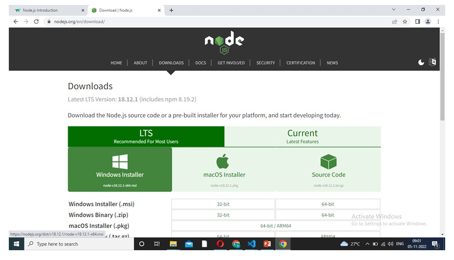